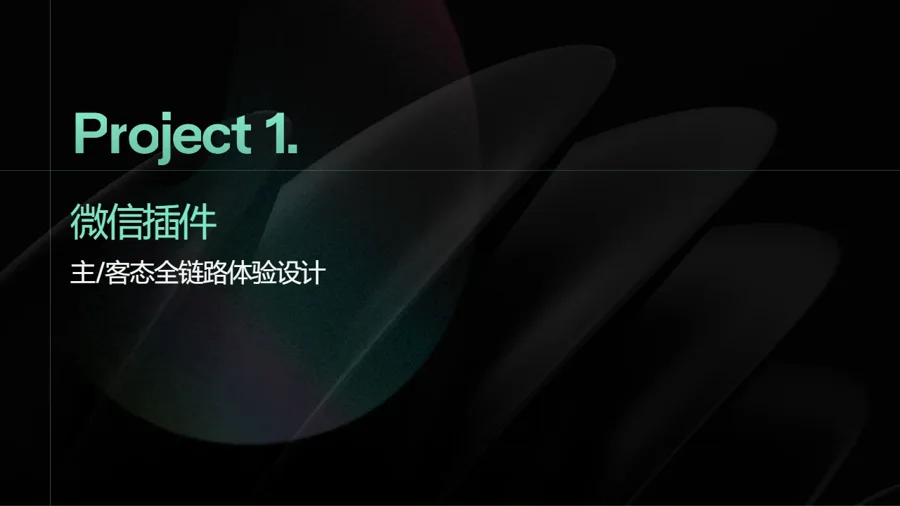
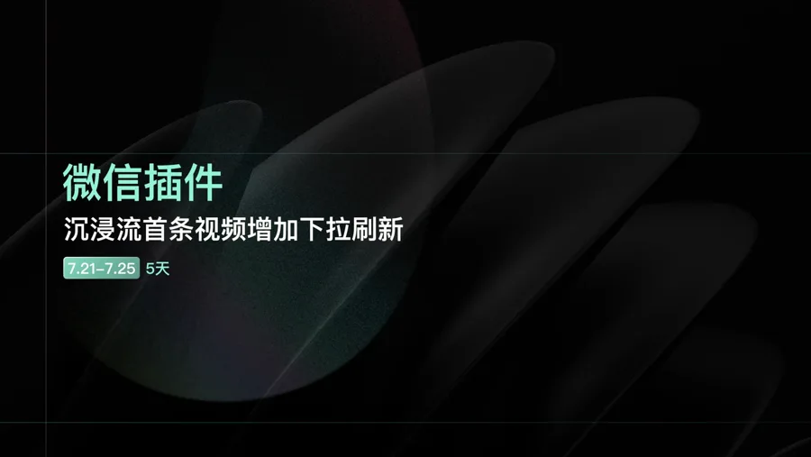
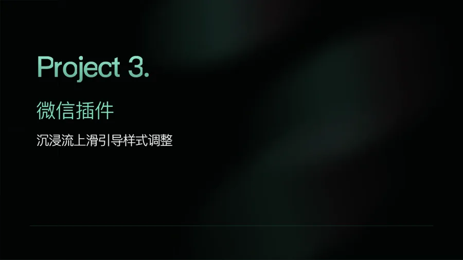
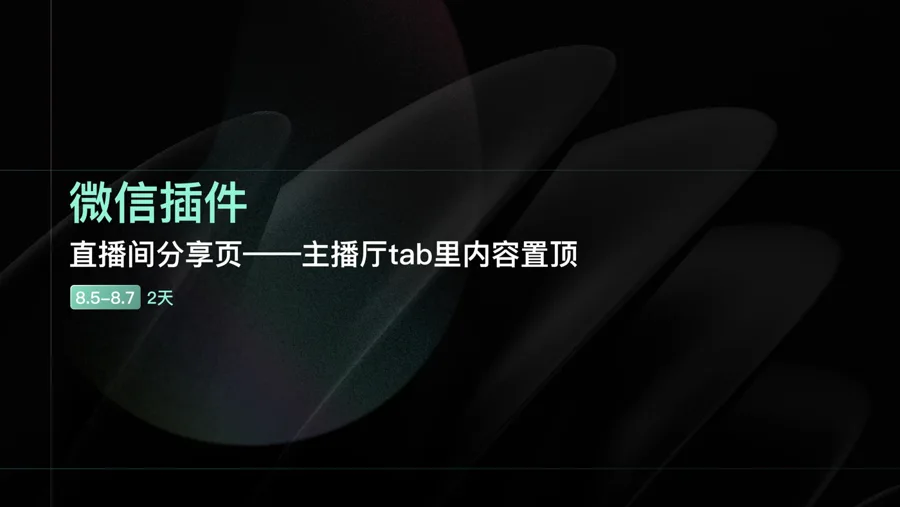
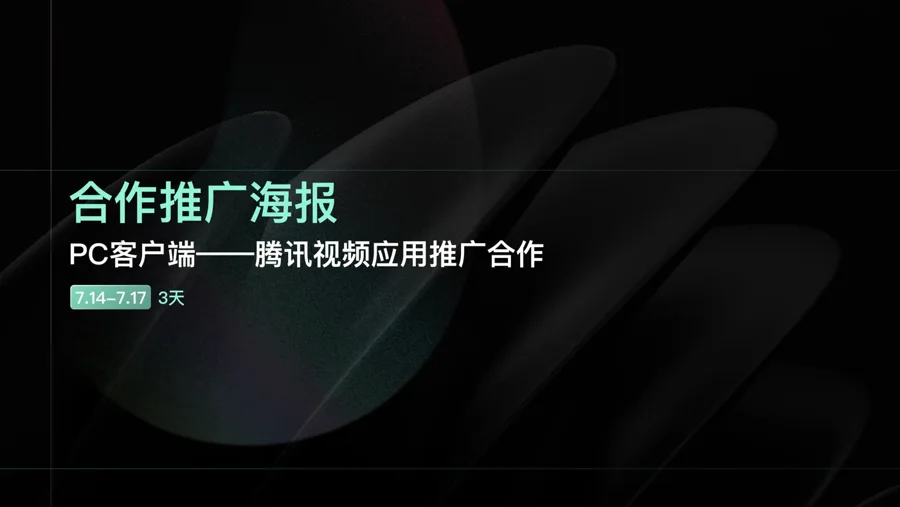
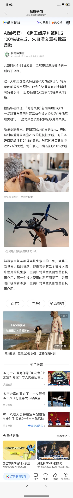
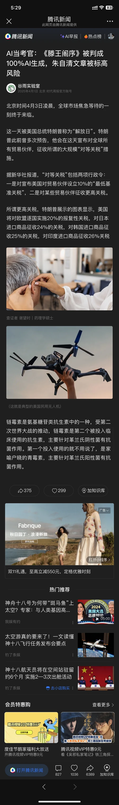
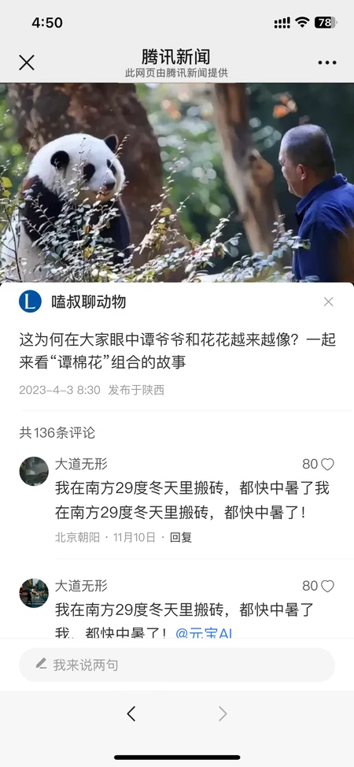
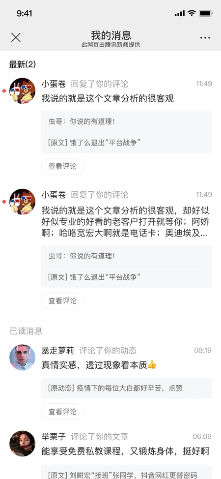
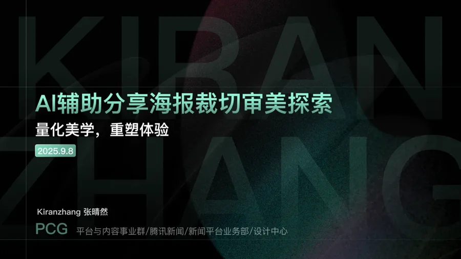

微信插件 · 主客态体验
统一 CP 信息主页与端外场景的访问体验。

统一 CP 信息主页与端外场景的访问体验。

保留原生手势，让主动换新不打断内容浏览。

优化首屏操作提示，帮助用户发现后续内容。

在主播厅中突出重要内容与关注入口。

面向腾讯视频合作场景的新闻客户端推广设计。


将团队既有规范转为 Figma 变量，重绘并交付多场景日夜间页面。


补齐评论参与与消息回访，完成交互页面设计、绘制与上线交付。

将审美判断转化为可验证的裁切策略与评分维度。
从 AI 造工具出发，探索轻量产品与实际使用场景。